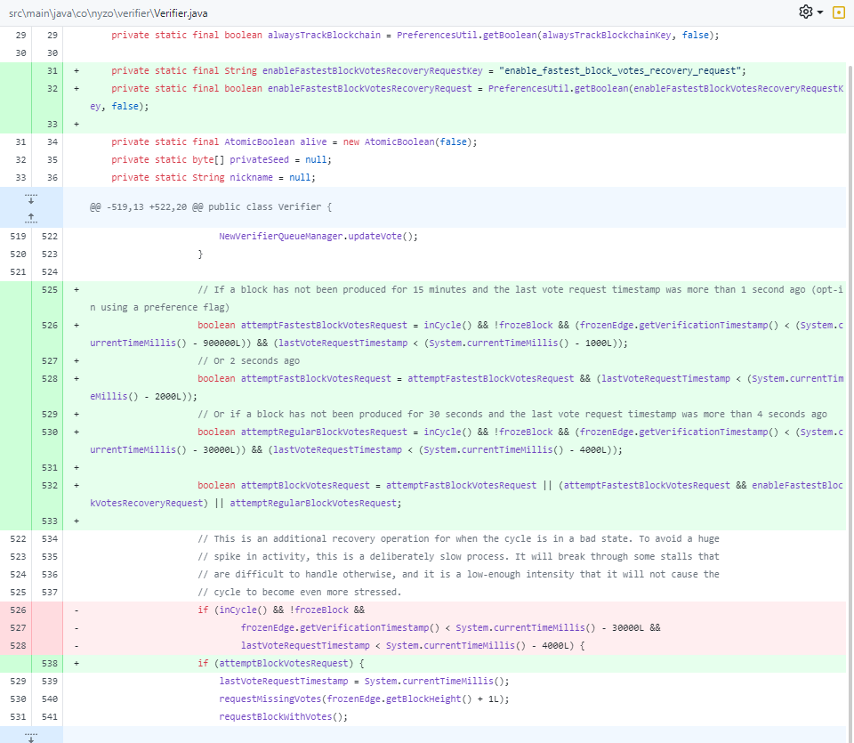

Author: Benjamin Van Renterghem @ construct0 BV
Date: 14/01/2024
Nyzo version 644 (commits on construct0's GitHub) introduces consensus realignment, new preference flags, new message types, n-tiered blockvote fetching and meshlistener finetuning within construct0's nyzoVerifier repository.
This version affects all run modes.
This version spans across multiple commits, do not run any subversion other than 7.
Only version 644.7 has a version tag since the other subversions rendered the major version unfinished.
Version 644.7 concludes the final subversion of this version.
Read the entirety of this release note, it contains many important details.
Node operators have 9 days to upgrade their verifiers or until 75% of the in-cycle verifiers run version 644.7, whichever comes first.
The failure to upgrade your personal network in time will mean dropping out of the cycle the next time your verifier
is expected to produce a block.
Node operators should use the temporarily recommended setup of minimally 2 cores and 4GB of RAM per in-cycle verifier, until version 645.
Node operators should upgrade their sentinels first, then their verifiers, to ensure a block can be produced regardless of verifier state.
Your verifier will get blacklisted by approximately 200 unupgraded or otherwise differently configured in-cycle verifiers
after 15 minutes due to these verifiers blacklisting your verifier due to the missing VersionRequest and VersionResponse
message types on their end. This has no impact on block vote propagation and recovery.
The maximum number of votes has been increased to 1000 from 20. This does not pose any problems whatsoever but is necessary when attempting to remove a lot of malignant in-cycle verifiers.
The logic of shouldPenalizeVerifier in the VerifierRemovalManager has been cleaned up to be more clear.
An extra possible path has been added during said cleanup, it pertains to the enabling of verifiers removals after the cycle's open edge height deviates more than 12342 blocks from the frozen edge height, indicating a suboptimal network state or a stalled chain state as we can observe right now.
The logic of updateScoresForFrozenBlock has been extended, if no active in-cycle verifier is found for an identifier, the performance score will only increase until this is rectified. This addition has become opt-in in subversion 1.
Perhaps the most important addition of logic in this subversion is the required amount of block votes required in the UnfrozenBlockManager's attemptToFreezeBlock function. Before a minimum of 75% was required. This logic slowly decreases the percentage of required block votes required with the absolute minimum being 50% of in-cycle verifiers + 1 node to ensure a minimum of 50% regardless of division by 2's end result.
In the NodeManager a new function was added to allow the possibility of checking if an in-cycle verifiers identifier is active.
nyzo_verifier
Due to the performance score increasing regardless of the check introduced in the previous subversion, the logic has been made opt-in using a new preference flag, performance_score_decrement_no_active_incycle_verifier.

New VersionRequest and VersionResponse message types were introduced. In addition to that the existing Version class was modified to a non-static variant in order to make this work with the new message types.
Two new functions were added to the NodeManager which enable the sending of verifier requests and the fetching of versions of the in-cycle verifiers.
These two new functions are not used in this subversion.
In order to run subversion 3, you are required to run subversion 4. Keep in mind that this is not recommended, please run subversion 7.
In this subversion the changes in subversion 3 warranted updating the existing references to the Version class. This was done with as little change as possible, but the initialization of the Version class twice per reference is suboptimal, yet negligible. This will be corrected at a later point in time.
To enable testing the MeshListener connection defaults were drastically increased. These were finetuned in a later subversion after prior subversions were tested extensively, allowing this release note to contain the recommendation of a temporary increase in compute and RAM needed to bridge the poor network state we're currently experiencing.
The function getInCycleNodeVersions introduced in a prior subversion had to be finetuned to avoid spamming the other in-cycle verifiers with every attempt to freeze a block.
If the verifier starts up and the first attempt is made to freeze a block, the logic will execute. If the requestBeforeHand argument is true, the logic will execute, this is nowhere the case in the entire codebase. If more than 15 minutes have passed since the logic was executed, the logic will execute.
The logic introduced in subversion 0 pertaining to the important consensus realignment has been protected by introduction of two new pathways which will unlock the gradual lowering to a minimum of 50% in-cycle verifier block votes required to freeze a block.
The first pathway checks if 75% of the in-cycle verifiers runs v644.7, it calls the aforementioned getInCycleNodeVersions to gather the Map and to reduce it to a usable amount. The minimum version and subversion were set to enable testing (later increased in subversion 7). A calculation is made and stored as a boolean.
The secondary pathway is the most important, if more than 8~9 days have passed since the aforementioned minimum version and subversion were released, the result of the calculation is stored as a boolean. To calculate the amount of days, the new function of the new CalendarUtil class was used.
A new utility class, the CalendarUtil was introduced and used by the aforementioned. It contains one function, which allows for two Calendars to be provided as an argument and returns the difference in days. Usage of Math.abs() was used in conjunction with this function in the secondary pathway to get an absolute value at all times.
The changes to the MeshListener's connection defaults from subversion 5 are finetuned and lowered as the result of running tests on a testnet locally.
The start date of the final version and subversion was increased to the date at time of writing (14th of january 2024), plus one day to allow for extra leeway due to the release and release note being first shared with the public on a sunday.
Lastly, a small bug was fixed which didn't set the hydration timestamp.